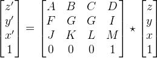
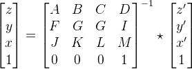
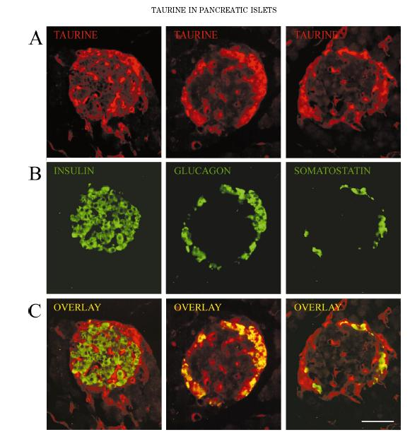
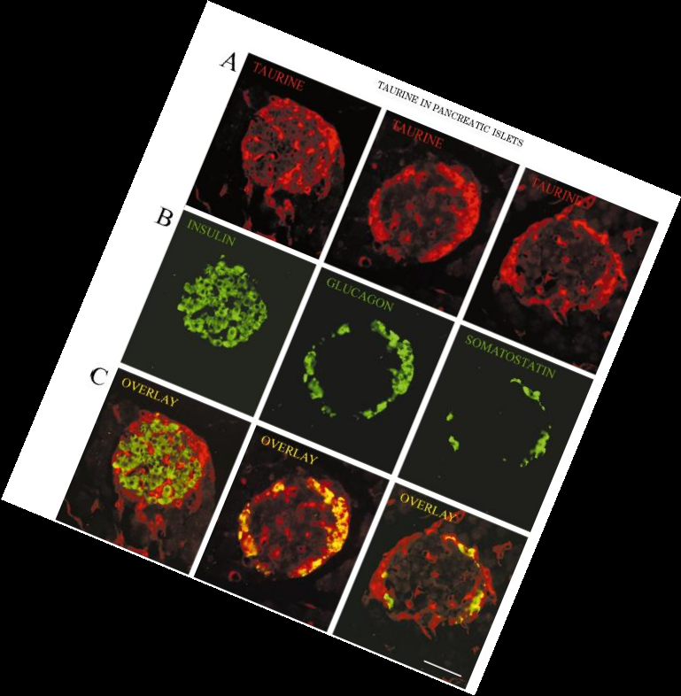

Function iaffine3
| namespace: | ia636 |
|---|---|
| page: | iaffine3 |
Synopse
Perform 2D or 3D affine transforms using closest neighbour, linear (bi or tri-linear) or custom interpolation.
Note that the transform matrix T is not handled the same way as in iaffine. In iaffine3 row and column zero are related to axis zero, that in the 2D case is y. In iaffine row and column zero are related to x axis.
- g = iaffine3(f, pts, interpol, destshape, destorg)
f: 2D or 3D, color or grayscale image to be transformed
T: 3x3 (2D) or 4x4 (3D) affine transform matrix
- interpol: selects interpolation method
- 'CLOSEST': closest neighbour (DEFAULT)
- 'LINEAR': bi-linear or tri-linear
- A method that follows the same signature of iainterpollin or iainterpolclosest can also be provided
- destshape selects the shape of the transformed image
- 'SAME': same shape as input (DEFAULT)
- 'FIT': minimum shape that fits all output pixels
- A tuple with the desired shape
- destorg: tuple of the destination origin,
- 0: set the origin at position (0, 0) or (0, 0, 0) (DEFAULT)
Direct 3D Transformation: x, y, z transformed to x', y', z'
|  |
Inverse Transformation: target coordinates x', y', z' mapped to original coordinates x, y, z
|  |
1 def iaffine3(f, T, interpol='CLOSEST', destshape='SAME', destorg=0):
2 import numpy as np
3 from ia636 import iainterpollin
4 from ia636 import iainterpolclosest
5 if T.ndim != 2 or T.shape[0] != T.shape[1]:
6 raise ValueError, 'T must be a square matrix'
7
8 dim = T.shape[0] - 1
9 if dim != 2 and dim != 3:
10 raise ValueError, 'T must be either 3x3 or 4x4 (2D or 3D transform)'
11
12 if f.ndim < dim:
13 raise ValueError, 'dimention of f is not compatible with the transform matrix'
14
15 # if dimension of f is higher than dim then several planes need to be transformed.
16 cor = (f.ndim > dim)
17
18 # split the shape of f in two parts. sht is the part where the tranform is applied,
19 # shh is not subject to the affine transform
20 sht = f.shape[f.ndim - dim:]
21 shh = f.shape[:f.ndim - dim]
22
23
24 invT = np.linalg.inv(T.astype(np.float))
25 # get the limits of the destination image
26 shmin = np.asarray(destorg).astype(int)
27
28 # f shape as a column
29 fshapecol = np.asarray(sht)
30 fshapecol.shape = (dim, 1)
31 if destshape == 'SAME':
32 shmax = np.asarray(sht)
33 shmin = np.zeros((1), int)
34 elif destshape == 'FIT':
35 if dim == 2:
36 M = np.asarray([[0,0,1,1],[0,1,0,1]]).astype(float)
37 else:
38 M =np.asarray([[0,0,0,0,1,1,1,1],[0,0,1,1,0,0,1,1],[0,1,0,1,0,1,0,1]]).astype(float)
39 M *= (np.asarray(fshapecol)-1)
40 M = np.vstack((M, np.ones((1,M.shape[1]))))
41 M = np.dot(T, M)
42 shmax = np.ceil(np.max(M, 1)[:-1]).astype(int)
43 shmin = np.floor(np.min(M, 1)[:-1]).astype(int)
44 else:
45 shmin = np.asarray(destorg).astype(int)
46 shmax = np.asarray(destshape).astype(int) + shmin
47 # shmin in column shape
48 shimincol = np.reshape(shmin, (shmin.shape[0], 1))
49
50 # get indices in target space
51 ind = np.indices(shmax-shmin)
52 ind.shape = (ind.shape[0], np.prod(ind.shape[1:]))
53 ind += shimincol
54
55 # shape of target image
56 dstshape = tuple(shmax - shmin)
57
58 #apply inverse transform on the target coordinates
59 tind = np.vstack((ind, np.ones((1, np.size(ind[0]))))).astype(float)
60 oind = np.dot(invT, tind)
61
62 # remove out of bounds indices
63 oindr = oind.copy()
64 oindr[:-1, :] = np.maximum(oind[:-1,:], 0)
65 oindr[:-1, :] = np.minimum(oindr[:-1,:], fshapecol-1)
66
67 # Select interpolation function
68 if interpol=='LINEAR':
69 interpolfunc = iainterpollin
70 elif interpol=='CLOSEST':
71 interpolfunc = iainterpolclosest
72 else:
73 # the user is providing his own interpolation function
74 interpolfunc=interpol
75
76
77 # interpolate data
78 if cor:
79 count = np.prod(shh)
80 fr = np.reshape(f, ((count,) + sht))
81 interpshape = ((count,) + (np.prod(dstshape),))
82 g = np.empty(interpshape)
83 for i in range(count):
84 g[i] = interpolfunc(fr[i], oindr[0:-1,:])
85 # set to 0 points out of bounds
86 g[i, np.not_equal(np.sum(np.not_equal(oindr, oind), 0), 0)] = 0
87 g.shape = (shh + dstshape)
88
89 else:
90 g = interpolfunc(f, oindr[0:-1,:])
91 # set to 0 points out of bounds
92 g[np.not_equal(np.sum(np.not_equal(oindr, oind), 0), 0)] = 0
93 g.shape = dstshape
94 return g
Example:
1 import numpy as np
2 from ia636 import *
3
4 def showWithSize(im, text):
5 adshow(im, text + " " + str(im.shape))
6
7 print "Rotate 3D and 3D images by 90 degrees\n"
8
9 T = np.dot(np.array([[1,0,0,0],
10 [0, 0,1,0],
11 [0, -1,0,0],
12 [0, 0,0,1]]).astype(float),
13 np.array([[1,0,0,-1],
14 [0,1,0,-1],
15 [0,0,1,-1],
16 [0,0,0, 1]]).astype(float))
17
18 T = np.dot(np.array([[1,0,0,1],
19 [0,1,0,1],
20 [0,0,1,1],
21 [0,0,0,1]]).astype(float), T)
22 print "T= \n", T
23 im = np.arange(0, 27)
24 im.shape = (3, 3, 3)
25 print "im =\n", im
26 print "im rotated=\n", iaffine3(im, T, 'LINEAR')
27 print "iaffine 2D test\n", iaffine3(im[0], T[1:, 1:])
28
29 print "Expand T by 50% in all directions\n"
30 T = np.array([[1.5, 0.0, 0.0, 0.0],
31 [0.0, 1.5, 0.0, 0.0],
32 [0.0, 0.0, 1.5, 0.0],
33 [0.0, 0.0, 0.0, 1.0]])
34 print "T=\n", T
35 print "im expanded using linear interpolation=\n", iaffine3(im, T, 'LINEAR')
36 print "im expanded using closest interpolation=\n", iaffine3(im, T, 'CLOSEST')
37
38 # enlarge the cameraman
39 T = np.asarray([[2,0,0],[0,2,0],[0,0,1]])
40 im = adreadgray('cameraman.tif')
41 showWithSize(im, "cameraman in original:")
42 showWithSize(iaffine3(im, T, 'CLOSEST', 'FIT'), "enlarged cameraman, closest pixel interpolation:")
43 showWithSize(iaffine3(im, T, 'LINEAR', 'FIT'), "enlarged cameraman, bi-linear interpolation:")
44
45 th = np.pi/8
46 T = np.asarray([[cos(th),sin(th),0],[-sin(th),cos(th),0],[0,0,1]])
47 showWithSize(iaffine3(im, T, 'LINEAR', 'FIT'), "rotated cameraman, fit to dest size:")
48
49 # using a color image
50 imc = adread('app/overlay.jpg')
51 showWithSize(imc, 'color image:')
52 showWithSize(iaffine3(imc, T, iainterpollin, 'FIT'), 'rotated color image:')
53
54 T = np.asarray([[4,0,0],[0,4,-300],[0,0,1]])
55 showWithSize(iaffine3(im, T, 'CLOSEST', 'SAME'), "magnified cameraman, same image size, closest pix:")
56 showWithSize(iaffine3(im, T, 'LINEAR', 'SAME'), "magnified cameraman, same image size,linear interpol:")
Rotate 3D and 3D images by 90 degrees T= [[ 1. 0. 0. 0.] [ 0. 0. 1. 0.] [ 0. -1. 0. 2.] [ 0. 0. 0. 1.]] im = [[[ 0 1 2] [ 3 4 5] [ 6 7 8]] [[ 9 10 11] [12 13 14] [15 16 17]] [[18 19 20] [21 22 23] [24 25 26]]] im rotated= [[[ 6. 3. 0.] [ 7. 4. 1.] [ 8. 5. 2.]] [[ 15. 12. 9.] [ 16. 13. 10.] [ 17. 14. 11.]] [[ 24. 21. 18.] [ 25. 22. 19.] [ 26. 23. 20.]]] iaffine 2D test [[6 3 0] [7 4 1] [8 5 2]] Expand T by 50% in all directions T= [[ 1.5 0. 0. 0. ] [ 0. 1.5 0. 0. ] [ 0. 0. 1.5 0. ] [ 0. 0. 0. 1. ]] im expanded using linear interpolation= [[[ 0. 0.66666667 1.33333333] [ 2. 2.66666667 3.33333333] [ 4. 4.66666667 5.33333333]] [[ 6. 6.66666667 7.33333333] [ 8. 8.66666667 9.33333333] [ 10. 10.66666667 11.33333333]] [[ 12. 12.66666667 13.33333333] [ 14. 14.66666667 15.33333333] [ 16. 16.66666667 17.33333333]]] im expanded using closest interpolation= [[[ 0 1 1] [ 3 4 4] [ 3 4 4]] [[ 9 10 10] [12 13 13] [12 13 13]] [[ 9 10 10] [12 13 13] [12 13 13]]]

cameraman in original: (256, 256) |
enlarged cameraman, closest pixel interpolation: (510, 510) |
|
enlarged cameraman, bi-linear interpolation: (510, 510) |
rotated cameraman, fit to dest size: (334, 334) |
|

color image: (3, 611, 580) |

rotated color image: (3, 786, 769) |
|
magnified cameraman, same image size, closest pix: (256, 256) |
magnified cameraman, same image size,linear interpol: (256, 256) |
See Also
- ia636:iaffine - Simpler affine geometric transform
- iainterpolclosest - Closest pixel interpolation
- iainterpollin - Linear, bi-linear or tri-linear interpolation